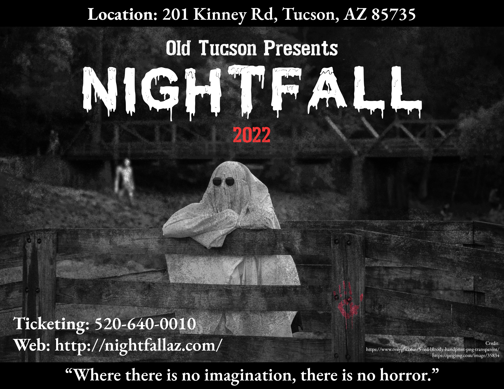

My Projects
Graphic Design
Here are some of my showcased works I have created for class during Graphic Design at both Combs High School and ASU Polytechnic.
SLSC Challenge Shirt Design

This logo was created in Graphic Design 3 for SkillsUSA, who is looking for the best designed shirt for Arizona. It requires students to make multiple designs of shirts of each category. The SLSC, an abbreviation for State Leadership and Skills Conference, one is what got me a Photoshop Awards.
"Nightfall" Halloween Poster

This black-and-white poster also got me a Photoshop Award, except earlier at Graphic Design 2. In this project, we are expected to pick at least three options to design for, and one of them I picked involves an advertisement poster for Old Tucson in a Halloween-themed festival called "Nightfall."
Cateract Energy Drink

One of my earliest attempt at designing starting in Graphic Design 1, I have to create a fictional energy drink and provide a mockup of what it will look like as an actual product. I named this energy drink "Cateract" because cats tends to be quite jumpy and more paranoid, hence their high level of activity, which in turn are associated with energy.
Hollow Knight: Silksong Anniversary Promotion Poster
.jpg)
Unlike other previous projects, this advertisement poster promoting a limited game sale on Hollow Knight: Silksong's first anniversary was design while I was still in ASU, which is last year. It was made entirely in Illustrator as a requirement, and took me a week or two to design, such as adding shadows to the characters, creating the cage entirely from shape, pathfinder, and pen tools.
Website Design
These are websites I have originally designed during GIT 215 as class projects.
Onion Sketchcraft
 See Onion Sketchcraft's Website
See Onion Sketchcraft's Website
The most recent original project, this website serves as a quick guideline on the ideas artists should learn and study before they are satisfied enough to move on.
This website includes not only a card-row sections detailing the ideas artist should learn and an aside section on what supplies to get, but also introduces responsive design in which the website must be changed to be adaptable to every screen, especially mobile variants. It was also built in VS Code editor and published in GitHub desktop.
Brunch n' More Breakfast Restaurant
 See Brunch n' More Breakfast Restaurant at CodePen
See Brunch n' More Breakfast Restaurant at CodePen
Built entirely on CodePen before my departure towards VS Code and Github Desktop, this project is centered around a restaurant that serves breakfast, similar to those of Denny's, iHop, and Waffle House. As this website was built earlier than Onion Sketchcraft, this website feels more rough and less accessible consequently, focused primarily on CSS Grid and Flexbox.
Collaborative Projects
These are projects I worked with my peers with during class.
Lobby Flyer for Castaway Island Pocket Folder


These images are pages of my two-sided lobby flyer for Castaway Island, a fictional beach resort as a part of the group effort to design its pocket folder alongside with other inserts, such as the flyer I did, for the Canon's presentation contest. The other inserts provided by my peers for Castaway Island consist of the treasure map activity, and advertisement flyers for the pool bar and its grill-related bar.